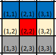
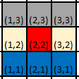

Directions
GoRogue provides the Direction class, which represents directions of movement on a grid. Instances of this class cannot be creatd by the user. Instead, eight instances of the Direction class are included as static members of Direction, which represent all possible directions on a grid; Direction.UP, Direction.UP_RIGHT, Direction.RIGHT, Direction.DOWN_RIGHT, Direction.DOWN, Direction.DOWN_LEFT, Direction.LEFT, and Direction.UP_LEFT. In addition, Direction.NONE is also provided. Each Direction class has DeltaX and DeltaY values that represent the change in x and y values, respectively, that occur when moving in any of these directions on a grid with integer positions.
Direction uses this data to provide useful interactions with other grid-related classes like Coord, but critically, these delta-x and delta-y values also define the "coordinate plane" GoRogue uses, by defining the visual location of the origin point (0, 0).
Defining the Coordinate Plane
As stated above, each Direction instance has a DeltaX and DeltaY property, which define the change in x and y values that occur when you "move" 1 grid position in the represented direction. The values of these DeltaX and DeltaY values for each direction define where the coordinate plane's origin point resides. While the DeltaX and DeltaY values are not modifiable directly, GoRogue does include a Direction.YIncreasesUpward flag which modifies them appropriately. It is extremely useful to be able to control this, given that two different origin points are commonly used in computer graphics applications/game engines.
Standard Screen Coordinates
In standard computer graphics applications, including many roguelike/ascii display libraries, y-values increase as you proceed downward from the origin. This implies that the DOWN direction (or any direction with a downward component) has a positive DeltaY value, while the UP direction (or any direction with an upward component) has a negative DeltaY value:

The red square represents an arbitrary starting location. Notice that the blue squares, representing locations adjacent in the directions UP_LEFT, UP, and UP_RIGHT, have a smaller y-value than the starting location, whereas the grey squares, representing locations adjacent in the DOWN_LEFT, DOWN, and DOWN_RIGHT directions, have larger y-value than the starting point.
Standard Mathematical Coordinates
In a more standard mathematical coordinate plane, y-values increase as we progress upward from the origin. This implies that directions with a upward component have a positive DeltaY value, while directions with a downward component have a negative DeltaY value:

Again, the red location represents an arbitrary starting location. The blue squares, depicting adjacent squares in the UP_LEFT, UP, and UP_RIGHT directions, have a larger y-value than the starting location this time, while the grey squares, depicting those adjacent in the DOWN_LEFT, DOWN, and DOWN_RIGHT directions, have a smaller y-value than the starting location.
This coordinate plane is used as the basis for "scene coordinates" in many visual game libraries such as Unity.
YIncreasesUpwards Flag
Since both of these coordinate plane definitions are relatively common, GoRogue provides the Direction.YIncreasesUpward flag, which sets the DeltaX and DeltaY values of the Direction instances as appropriate, thus defining the coordinate plane. This property defaults to false, meaning that, by default, GoRogue uses the Standard Screen Coordinate plane, where y-values decreas as you progress upwards, and increase as you progress downwards. When the flag is set to true, the predefined Direction instances are modified to define the Standard Mathematical Coordinate plane, where y-values increase as you progress downwards and increase as you progress upwards:
Direction.YIncreasesUpward = false; // This is the default if the value is never set
// Standard Screen Coordinates
System.Console.WriteLine($"DeltaX and DeltaY for UP: ({Direction.UP.DeltaX}, {Direction.UP.DeltaY})");
System.Console.WriteLine($"DeltaX and DeltaY for DOWN: ({Direction.DOWN.DeltaX}, {Direction.DOWN.DeltaY})");
System.Console.WriteLine("\nFlipping YIncreasesUpward to true...");
Direction.YIncreasesUpward = true;
// Standard Mathematical Coordinates
System.Console.WriteLine($"DeltaX and DeltaY for UP: ({Direction.UP.DeltaX}, {Direction.UP.DeltaY})");
System.Console.WriteLine($"DeltaX and DeltaY for DOWN: ({Direction.DOWN.DeltaX}, {Direction.DOWN.DeltaY})");
The setting of the Direction.YIncreasesUpward flag also affects the output of any function that bases its output on Directions (for example, Coord.BearingOfLine or Direction.GetDirection).
The intent is that most games would only use one type of coordinate plane -- thus, this variable would be set once when the program is created. One must use caution if the flag is changed mid-program -- this is possible, however any direction instances that are stored in variables will NOT be updated. For this reason, GoRogue avoids doing changing this variable internally.
Operations with Directions
Direction provides convenient ways to rotate a direction clockwise/counter-clockwise, as well as to interact with 2D points.
Interacting with 2D Points
Potentially the most common use of Directions is to use them to move a coordinate by one unit in a given direction. GoRogue provides a Coord-Direction addition operator that allows adding Direction instances to Coord instances conveniently:
Coord start = (1, 3);
Coord movedRight = start + Direction.RIGHT; // movedRight is (2, 3)
Turning Directions
Given a direction, we can also "turn" it clockwise or counter-clockwise and retrieve the appropriate direction by using the addition/subtraction or increment/decrement operators Direction provides:
Direction d = Direction.UP;
d++; // d is now the next clockwise direction, eg. Direction.UP_RIGHT
d--; // d is now the next counter-clockwise direction, eg. Direction.UP
// d is now 2 directions clockwise, aka the closest clockwise cardinal direction,
// since d was cardinal. d will be Direction.RIGHT
d += 2;
System.Console.WriteLine(d);
// d is now 2 directions counter-clockwise, aka the closest counter-clockwise cardinal direction,
// since d was cardinal. d will be Direction.UP
d -= 2;
// These operators wrap around, so since there are 8 directions, d + 10 is equal to d + 2. d is Direction.RIGHT
d += 10;
For details on each operator provided, see the API Documentation for Direction.
Utility
GoRogue also provides a number of utility functions assist with common operations involving directions. These are covered fully in the API Documentation, but include Direction.GetDirection and Direction.GetCardinalDirection, which return the direction or cardinal direction, as appropriate, that most closely matches a given line.